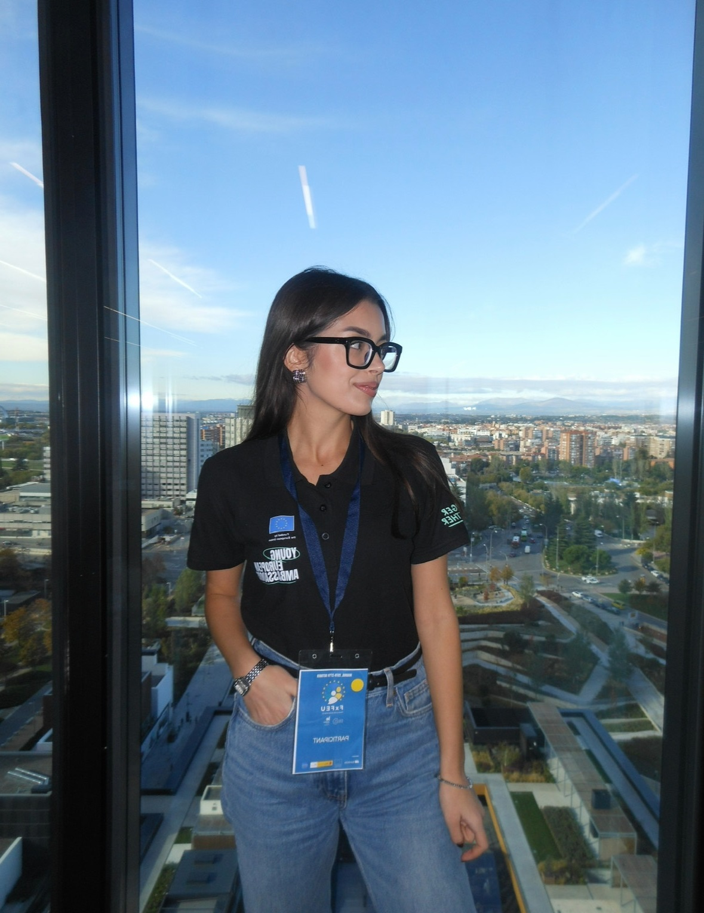
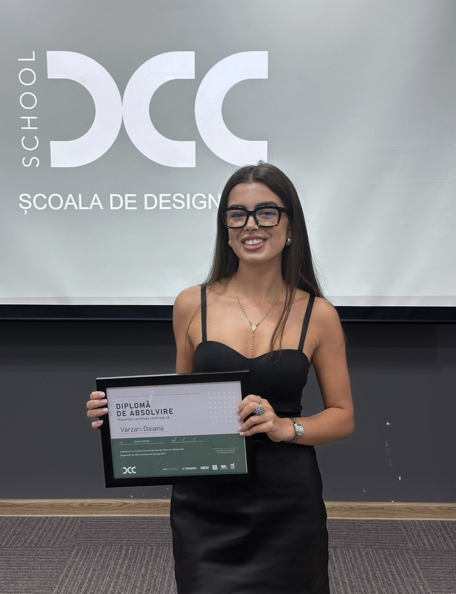
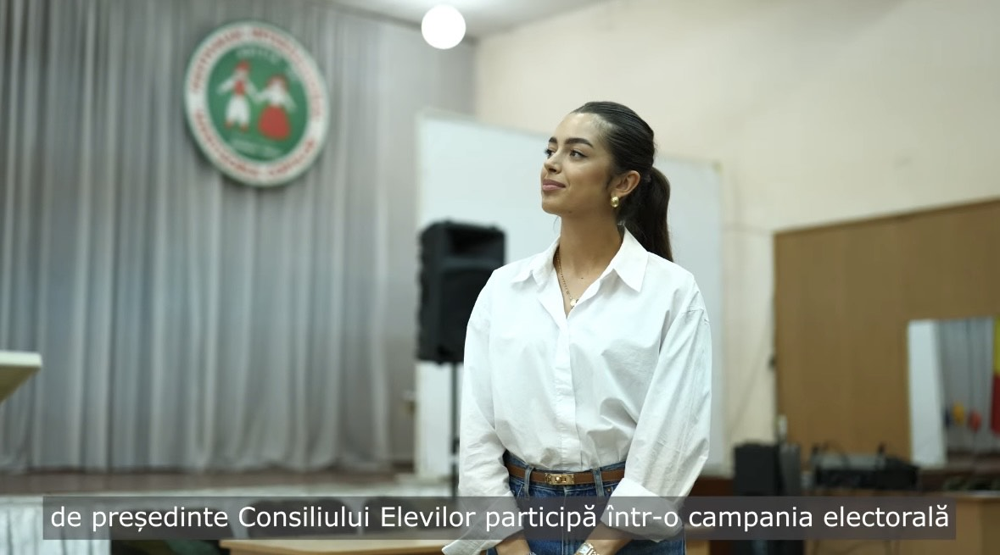
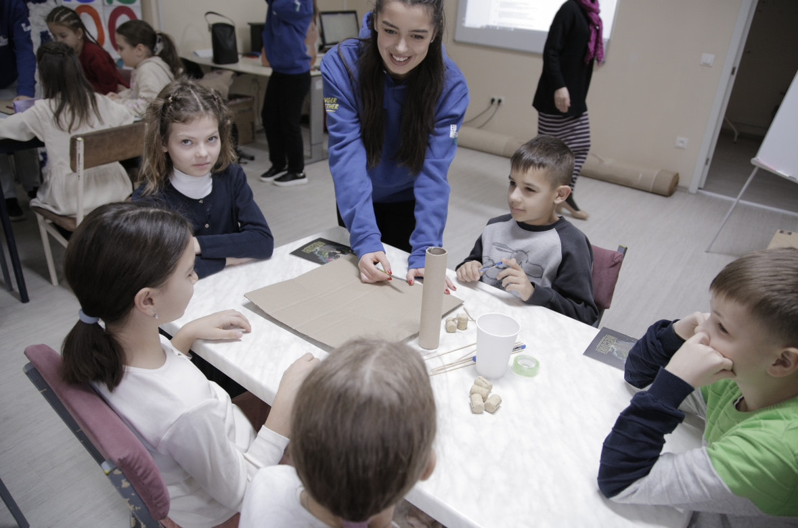
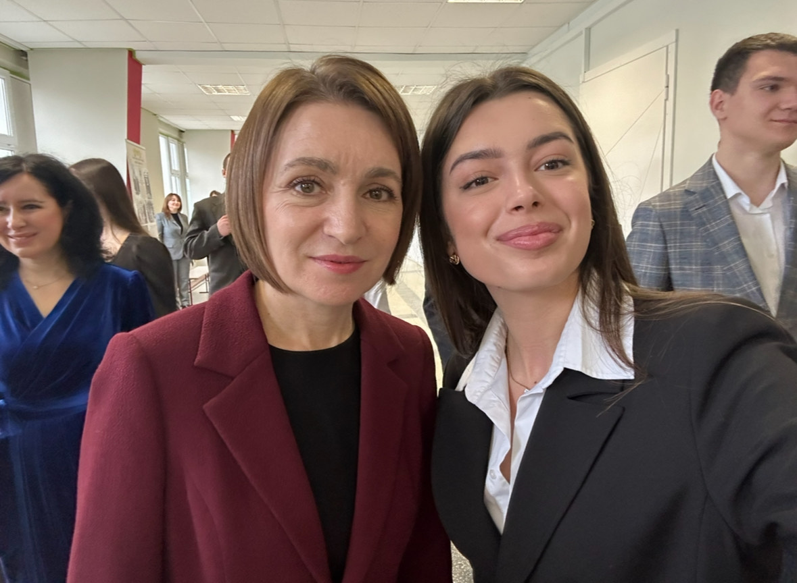
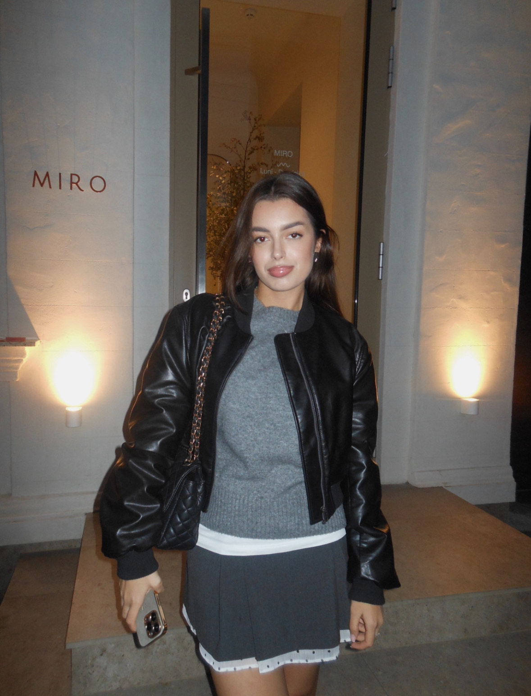
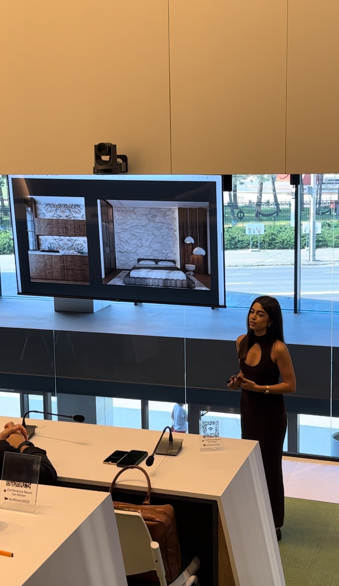
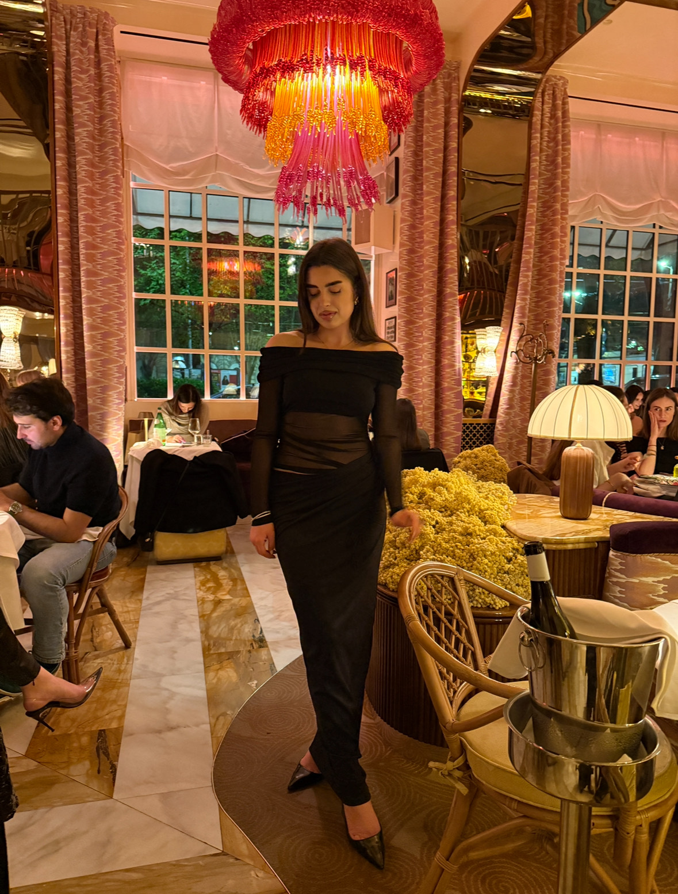

I have done voluntering since I was 14 years old. Being a volunteer gave me a sense of community, made me be more social as a person and it created for me a space in which I could express freely my thoughts and ideas. Here is a picture of me from last autumn when i was in Madrid ,as an representative of the initiative Young European Ambassador, to a forum in which we discused about european integration, the future of EU and got educated about other cultures.

In 11th grade i did a Interior Design course and I won best project in my group, i taught me a lot of stuff.Most important is to not underestimate the amount of work a disigner does for a good project. When i got to work with 3dsMax i found it challanging at first because it was my first time working with such complex softwear but with the help of my professor I developed a skill that will last me a lifetime and I want in the future to work in this field and maybe I it is my calling to design, not only houses but also websites.


I participated in several community and environmental projects. One of my favorite experiences was volunteering to teach children about renewable energy and the importance of saving power. These activities helped me develop teamwork, communication, and a sense of social responsibility.

As you can already see, I love optics, and that curiosity extends to exploring new and beautiful places. Traveling inspires me to see the world from different perspectives—both literally and creatively. This photo was taken during a memorable trip to Rome.

While serving on my high school`s student council, I had the opportunity to take part in a round-table discussion with the president of my country—the first female president in Moldova. This experience deeply inspired me to challenge stereotypes and pursue my goals confidently. It strengthened my belief that women can thrive in any field, including those traditionally dominated by men.

Here is just a picture of me at my favourite matcha spot in Moldova.

This was one of the most stressful yet rewarding days of my life. As an extrovert, I enjoy speaking in front of people, but this time the pressure was higher—I had to present my design project to the company’s CEO. The hard work paid off, and I proudly won the internship.

Another random picture of me while i was on a trip in Milan.